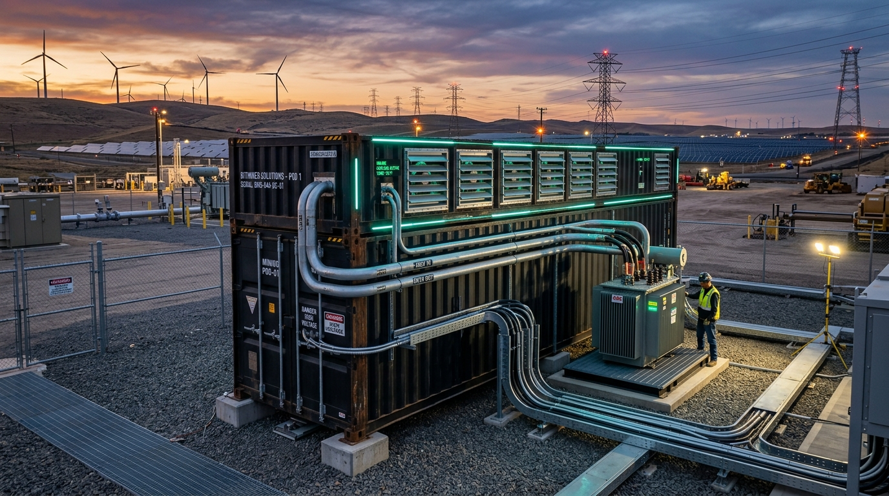
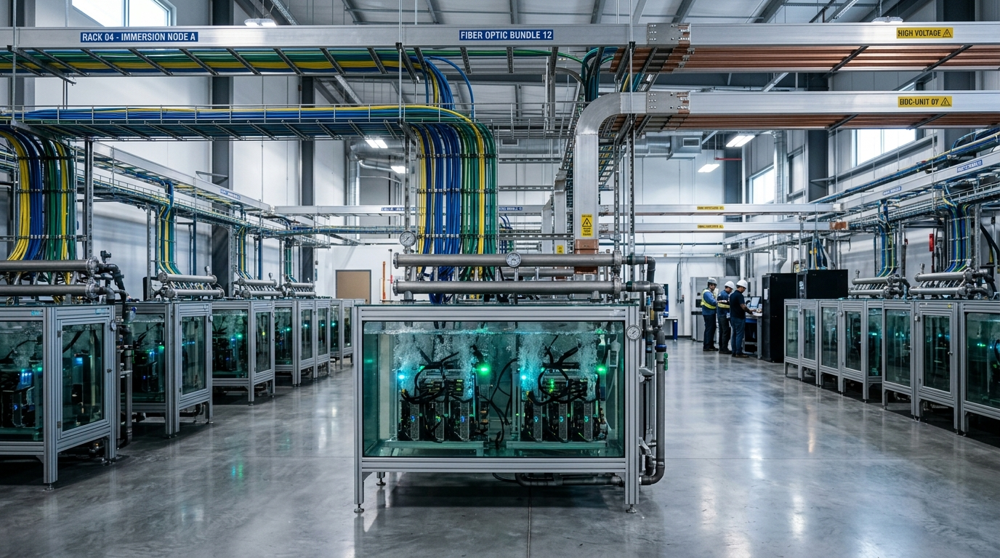
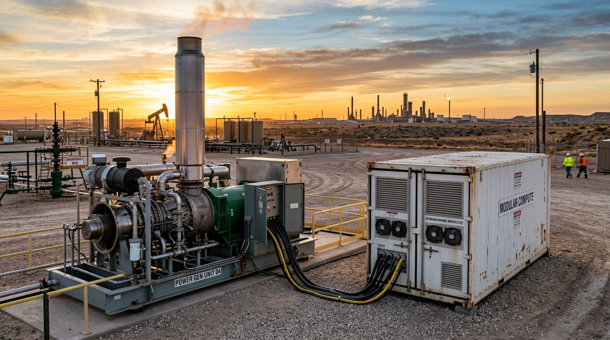

Infraestructura Tecnológica & Minería Digital para la Industria Energética
Diseñamos y operamos redes críticas de telecomunicaciones, centros de datos modulares para minería digital de alta densidad, y gemelos 3D con inteligencia artificial para maximizar la rentabilidad de plantas, pozos e instalaciones industriales.
Redes troncales de alta velocidad y radioenlaces inmunes a condiciones climáticas extremas.
Arquitecturas redundantes que garantizan cero caídas en operaciones petroleras y de bombeo.
Conversión de gas de venteo o capacidad eléctrica ociosa en cómputo rentable in situ.
Algoritmos predictivos que alertan anomalías operacionales antes de generar paradas de planta.
Tecnología Industrial que Transforma Energía en Rendimiento & Valor
En kaironInnova resolvemos los tres mayores desafíos operativos del sector energético: la falta de conectividad confiable en áreas remotas, el desperdicio de recursos energéticos, y la toma de decisiones sin datos en tiempo real.
Ayudamos a nuestros clientes a blindar sus operaciones con telecomunicaciones que nunca caen, a monetizar energía excedente o gas de campo mediante infraestructura modular de minería digital, y a supervisar plantas completas mediante gemelos digitales tridimensionales e inteligencia artificial predictiva.
Conectividad Ininterrumpida en Campo
Llevamos fibra óptica, enlaces inalámbricos y redes seguras a pozos, taladros y plantas, eliminando zonas oscuras y garantizando control continuo.
Monetización Energética con Minería Digital
Diseñamos centros de cómputo modulares en contenedores que convierten energía disponible o gas de venteo en ingresos computacionales directos.
Control Total con Gemelos 3D & IA
Supervisa tus activos a kilómetros de distancia con modelos 3D interactivos que alertan anomalías antes de que causen paradas de planta.

Ingeniería de Redes Críticas & Conectividad de Campo
Diseño, despliegue y certificación de redes de datos industriales para refinerías, taladros, campamentos y puertos de embarque donde perder la conexión no es una opción.
Tendido de Fibra Óptica & Cableado Industrial
Diseño, fusión y certificación de redes troncales de fibra monomodo dieléctrica blindada y cableado estructurado Cat6A/Cat7 para enlazar salas de control, pozos y plantas sin cortes.
- Certificación OTDR y atenuación de ultra baja pérdida
- Tuberías Conduit selladas para áreas clasificadas (ATEX)
- Inmunidad total al ruido e interferencias electromagnéticas
Conmutación L2/L3 & Ciberseguridad OT/IT
Switches rugerizados para alta temperatura y segmentación estricta por VLANs para aislar de forma segura los sistemas SCADA de control y evitar ciberataques.
- Alineado con el estándar de ciberseguridad IEC 62443
- Priorización de paquetes de control crítico con QoS
- Redundancia de anillo industrial con convergencia en milisegundos
Sistemas de Respaldo Eléctrico & Energía Solar
Bancos de baterías industriales, rectificadores de -48VDC y paneles solares para que tus torres de telecomunicaciones y enlaces sigan transmitiendo 24/7 sin importar apagones.
- Autonomía prolongada para nodos remotos de comunicaciones
- Protección contra descargas atmosféricas y transitorios
- Monitoreo de estado de carga y salud de baterías vía SNMP
CCTV Térmico & Seguridad Perimetral
Cámaras antideflagrantes y sensores térmicos diseñados para patios de tanques y perímetros críticos, con detección automática de fuego, fugas e intrusión.
- Carcasas de acero inoxidable certificadas a prueba de explosión
- Transmisión de video en alta definición con ultra baja latencia
- Integración directa con centros de control y videowalls
Radioenlaces Inalámbricos de Larga Distancia
Conectividad de alta velocidad y baja latencia para locaciones remotas, plataformas marinas, taladros y estaciones de bombeo donde la fibra no llega.
- Enlaces Punto a Punto (PTP) y Punto a Multipunto (PTMP)
- Estudios de línea de vista, cálculo de torres y zonas de Fresnel
- Monitoreo continuo de nivel de señal y disponibilidad de enlace
Telefonía IP, Voceo Industrial & Radios
Sistemas de comunicación unificada de voz, perifoneo y voceo de emergencia (PA/GA) interconectados con radios digitales DMR/TETRA para brigadas operativas.
- Conmutadores IP PBX con redundancia geográfica de misión crítica
- Teléfonos antideflagrantes para áreas con presencia de gases
- Integración de audio y comunicaciones con salas de control central
Centros de Cómputo Modular & Minería Digital de Alta Densidad
Convertimos capacidad energética, gas asociado o excedentes eléctricos en potencia computacional de alto rendimiento mediante granjas de minería contenerizadas y refrigeración avanzada.

Contenedores Modulares Plug & Play (Mining Pods)
Unidades autónomas de 20 y 40 pies acondicionadas con ventilación forzada controlada, transformadores de potencia integrados y cuadros de distribución de alto amperaje para operar en campo.
- Despliegue operativo en menos de 30 días en sitio
- Aislamiento térmico industrial para intemperie extrema
- Telemetría remota 24/7 de hashrate, voltaje y temperatura

Refrigeración Avanzada por Inmersión Líquida
Sumergimos el hardware en fluido dieléctrico sintético no conductivo. Eliminamos ventiladores ruidosos, reducimos el consumo eléctrico a mínimos históricos (PUE < 1.05) y alargamos la vida útil de los equipos.
- Cero degradación por polvo, arena o humedad salina
- Hasta un 40% más de densidad de cómputo por m²
- Capacidad de overclocking seguro y recuperación de calor

Monetización de Gas Residual (Flare-to-Compute)
Aprovechamos el gas de venteo o subutilizado de pozos petroleros mediante motogeneradores conectados directamente a pods de minería digital, reduciendo la huella ambiental y creando un flujo de caja directo.
- Mitigación efectiva de la quema de gas en pozos remotos
- Autonomía energética in situ sin depender de la red pública
- Retorno de inversión medible en activos computacionales

De la Fibra Óptica en Campo a la Monetización del Cómputo
Construimos la infraestructura que conecta tus pozos, rentabiliza tu energía y automatiza tus procesos en una sola solución integrada.
Solicitar Estudio Técnico de CampoGemelos Digitales 3D & Monitoreo SCADA en Vivo
Supervisa cada detalle de tu operación con réplicas tridimensionales interactivas conectadas a telemetría en vivo de sensores industriales de campo.
Complejo de Refinación & Petroquímica (Zona 1)
Unidad de destilación al vacío, esferas de gas y manifolds de bombeo con telemetría de presión y flujo.
Puente Marítimo de Embarque & Oleoducto
Estructura atirantada portuaria con monitoreo de tensión en cables, inclinación y vibración por oleaje.
Centro Logístico Automatizado & Materiales
Nave industrial con grúas de estantería vertical, control de inventario de repuestos y telemetría de pesaje.
Separador Trifásico de Petróleo & Gas
Recipiente de alta presión con corte de nivel agua/aceite, interfaces de control de flujo y transmisores térmicos.
Parque de Generación & Subestación Eléctrica
Aerogeneradores, bancos fotovoltaicos y transformadores con sincronización de frecuencia y potencia reactiva.
Ecosistema de Agentes Autónomos en Planta
Conectamos sensores industriales de campo y telemetría de red a flujos de trabajo inteligentes para monitoreo predictivo, alertas tempranas y control automatizado.
1. Ingesta Continua de Sensores
Sensores industriales capturan fluctuaciones de presión, temperatura, vibración y consumo eléctrico cada segundo.
Modbus • MQTT • SNMP2. Análisis Predictivo con IA
Agentes inteligentes evalúan patrones históricos en tiempo real, calculando probabilidades de falla antes de que ocurran.
Modelos Predictivos • n8n3. Alerta & Mitigación Instantánea
Ajuste automático en lazos de control y notificación inmediata al personal de guardia por WhatsApp y correo corporativo.
Mitigación 24/7 en CampoProceso de Ingeniería & Despliegue
Un camino metódico de 4 etapas para entregar proyectos de telecomunicaciones, minería digital y gemelos 3D sin retrasos ni sobrecostos.
Diagnóstico & Viabilidad Técnica
Levantamiento en sitio, estudio de cobertura RF, análisis de capacidad eléctrica y evaluación de fuentes de gas disponibles.
Ingeniería de Detalle a la Medida
Diseño topológico de red física, cálculo de potencia de cómputo/hashrate y arquitectura de gemelos 3D con ciberseguridad.
Suministro & Montaje en Campo
Instalación de fibra óptica, torres, contenedores de cómputo modular e integración de telemetría por personal certificado.
Puesta en Marcha & Soporte 24/7
Calibración de sistemas, entrega de planos AS-BUILT, capacitación a operadores y mesa de ayuda técnica permanente.
Hablemos de su Próximo Proyecto Tecnológico
Nuestro equipo de ingenieros está disponible para realizar levantamientos técnicos en sitio, estudios de viabilidad y cotizaciones llave en mano.